These visualization tools can be used straight from the command line window.
They require an installation of Python 2.7 or higher.
The visualization scripts are located in FIDASIM/lib/scripts/
The following Python packages are required for plotting the inputs. If you are computing on a cluster, this is probably already done for you.
Below is a brief step-by-step tutorial on how to visualize FIDASIM inputs inside an example directory /u/garciaav/test with run ID 330LT and LHD.
The simplest command will plot all of your inputs (plasma, fields, distribution function and geometry):
plot_inputs /u/garciaav/test/ 330LT
If you are interested in being more specific, then use optional arguments -p, -f, -d or -g.
Plot the plasma
plot_inputs /u/garciaav/test/ 330LT -p
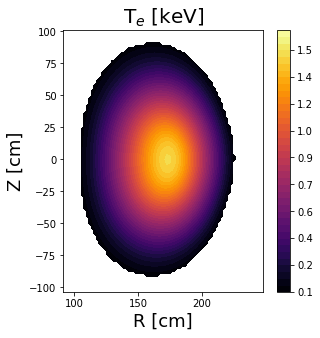
and the fields
plot_inputs /u/garciaav/test/ 330LT -f
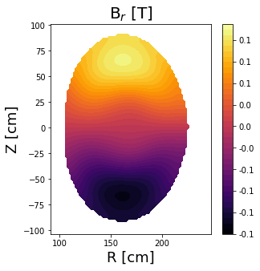 {: style="text-align: center"} Note: Similar to the FIDASIM code, plots of the plasma and fields use the mask variable to define the edge of the plasma.
Similarly, 2D projections of the distribution function can be plotted
plot_inputs /u/garciaav/test/ 330LT -d
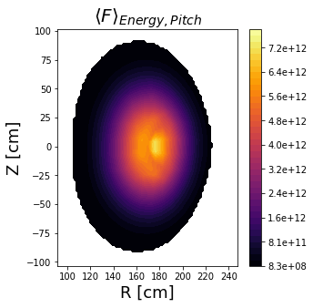 {: style="text-align: center"} Note: The R-Z plots of the distribution function will also use the mask variable from the equilibrium file if it is available.
The geometry file can be visualized interactively in a 3D rotatable plot:
plot_inputs /u/garciaav/test/ 330LT -g
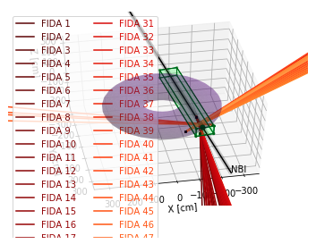
If you are using many channels, then your legend is probably crowding the plot. The following command hides the legend
plot_inputs /u/garciaav/test/ 330LT -g -l
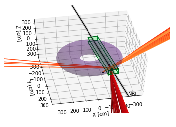 {: style="text-align: center"} Several things to note: NBI centerline and the half-widths are plotted in black Beam grid boundaries are drawn in green Diagnostic line-of-sights are in autumn colors Plasma boundary is approximated with a purple torus
Lineouts for the 2D plots of the plasma, fields and distribution function are available. For example, use the following command to plot lineouts at R = 153.4 cm
plot_inputs /u/garciaav/test/ 330LT -p -f -d -rz 153.4
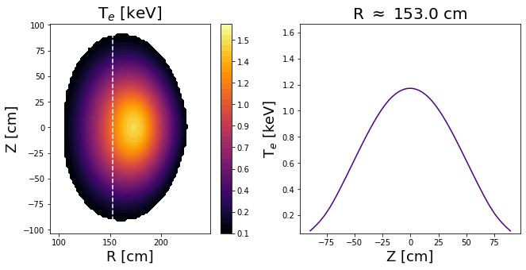 {: style="text-align: center"} 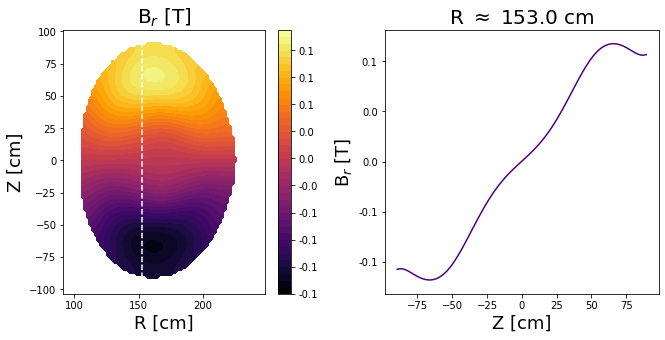 {: style="text-align: center"} 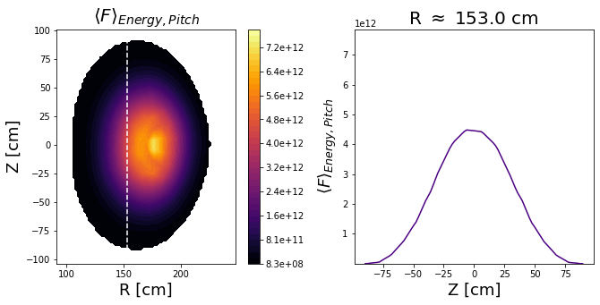
and conversely for lineouts at constant Z = -10.8 cm:
plot_inputs /u/garciaav/test/ 330LT -p -f -d -zr -10.8
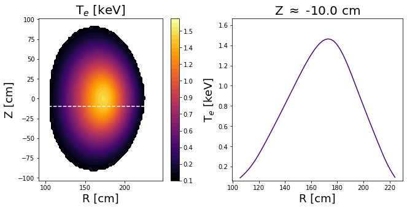 {: style="text-align: center"} 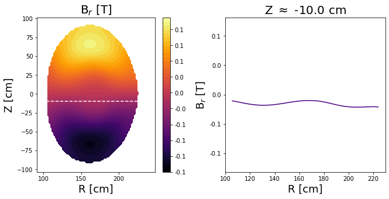 {: style="text-align: center"} 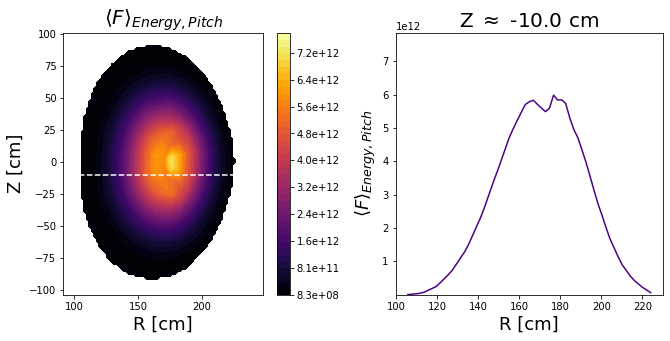
Since the distribution function is defined with 2 more coordinates (Energy and Pitch), more lineouts are available.
plot_inputs /u/garciaav/test/ 330LT -d -pz .2 -pr -.25 -ez 80 -er 40 -ep 18
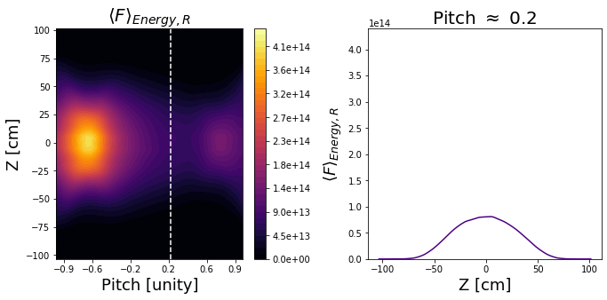 {: style="text-align: center"} 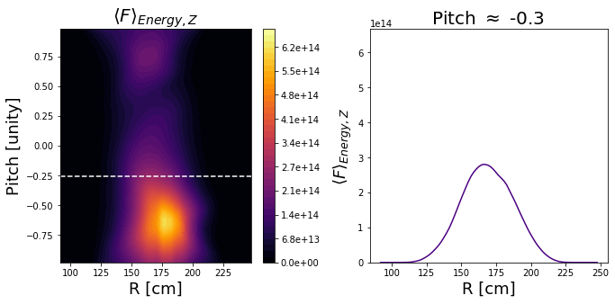 {: style="text-align: center"} 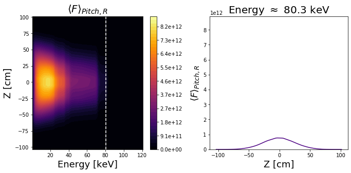 {: style="text-align: center"} 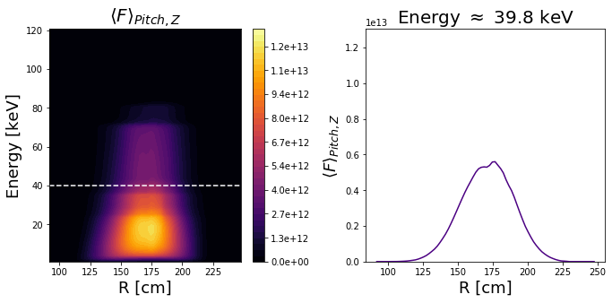 {: style="text-align: center"} 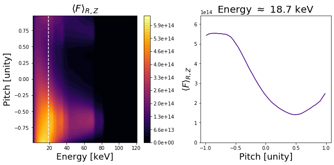 {: style="text-align: center"} Note: The first letter corresponds to the variable for the constant line and the second letter corresponds to the variable of the axis that is parallel to the constant line.
If you provided 3D inputs, then specify the toroidal angle in radians to view a slice of your inputs.
plot_inputs /u/garciaav/test/ LHD -p -f -d -ph 0.157
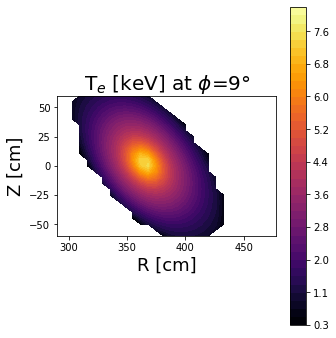 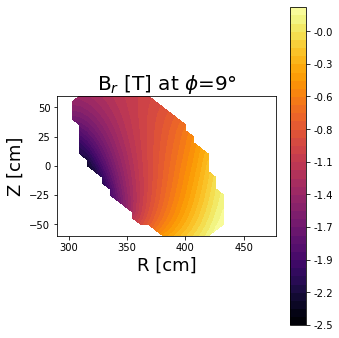 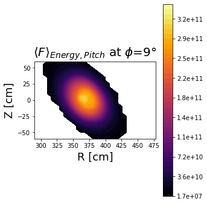
You can change the number of contour levels used in the 2D plots with -nl
You can save important plots as png files in a specified folder
-si /u/garciaav/test/figs/
Always remember that you can execute plot_inputs -h to display the help message.
You are all set to explore FIDASIM inputs!
The following Python packages are required for plotting the outputs.
Below is a brief step-by-step tutorial on how to visualize FIDASIM outputs inside example directory /u/garciaav/test/ with run IDs BAAE_1575, BAAE_1875, test_1 and test_2, and directory /u/garciaav/different/ with run ID diff_1575
The code executes in one of the following two cases:
*_spectra.h5 and *_npa.h5 files located in a single directoryThe simplest command is to plot everything located in a single folder with the -d argument.
If the code finds *_spectra.h5 files in the -d folder, you must indicate emission and channel information.
Use -s to plot all emission,
or select individually with -fi (FIDA), -pf (pFIDA), -f (Full), -hf (Half), -t (Third), -b (Bremsstrahlung), -c (Cold), -hl (Halo), and -dc (DCX).
Use -as, -rs or -ls to indicate all spectral channels, range of channels or list of channels.
Note: The first Python index is 0, but the code will add 1 to all subplots in order to avoid displaying “Channel 0”.
Similarly, if the code finds any *_npa.h5 files in the -d folder, you must indicate flux and channel information.
The syntax of the NPA arguments is similar to the spectral arguments.
Use -n to plot all NPA flux,
or select individually with -np (NPA) and -pn (pNPA).
Use -an, -rn or -ln to indicate all NPA channels, range of channels or list of channels.
If you have many FIDASIM outputs in the -d folder, below are two ways you can filter what the visualization script plots.
Filter out the NPA files and plot only spectral data by using the -os argument.
On the other hand, filter out the spectral files and plot only NPA data by using the -on argument.
Also, you can filter files by defining the run IDs with the -r argument.
plot_outputs -d /u/garciaav/test/
-s -as -n -an
Plots all spectral data, all spectral channels, all NPA data and all NPA channels.
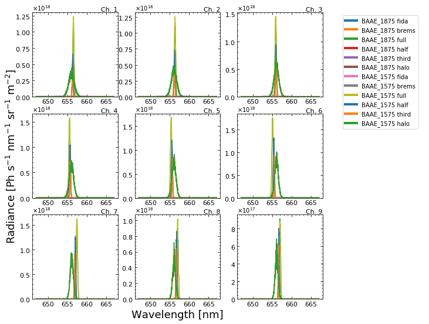
{: style="text-align: center"}
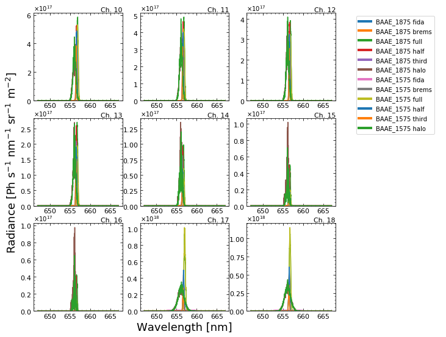
{: style="text-align: center"}
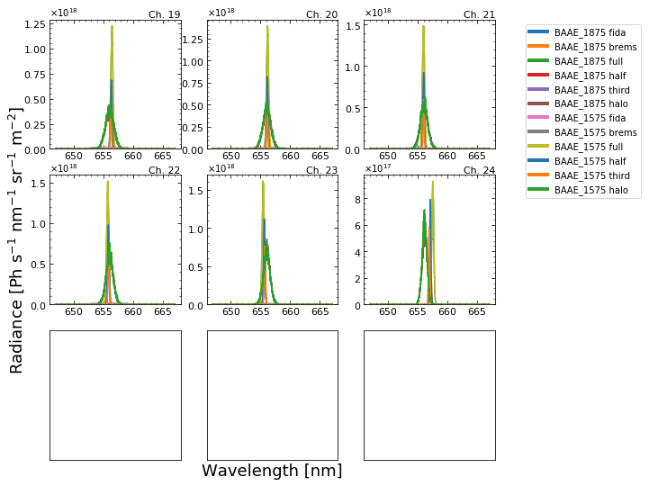
{: style="text-align: center"}
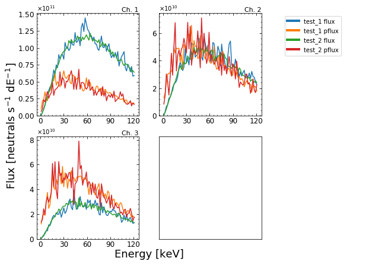
-s -rs 11 19 -n -rn 1 2
Plots all spectral data, range of spectral channels (11-19), all NPA data and range of NPA channels (1-2).
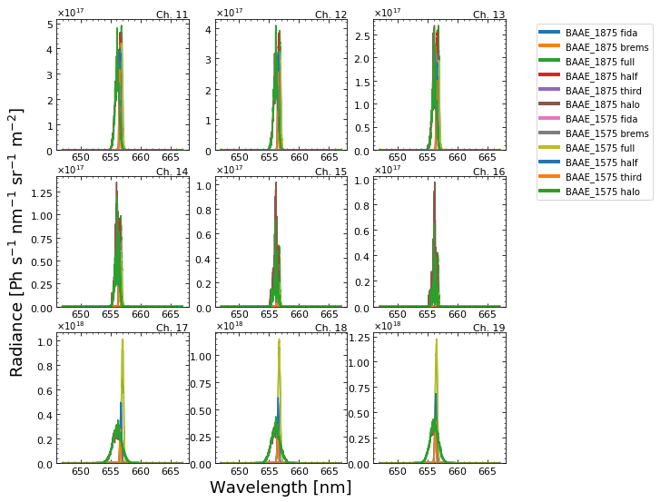
{: style="text-align: center"}
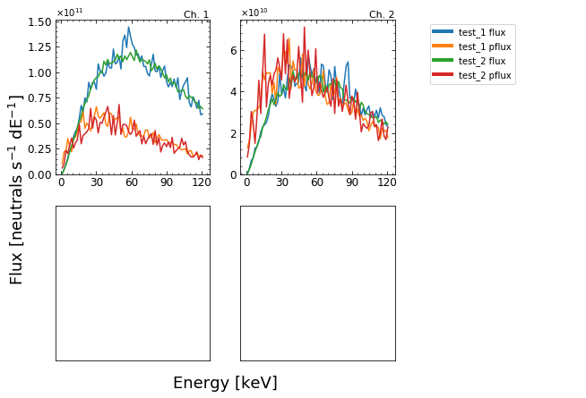
-fi -ls 1 14 22 -np -ln 2
Plots active FIDA data, list of spectral channels (1, 14 & 19), active NPA data and list of NPA channels (2).
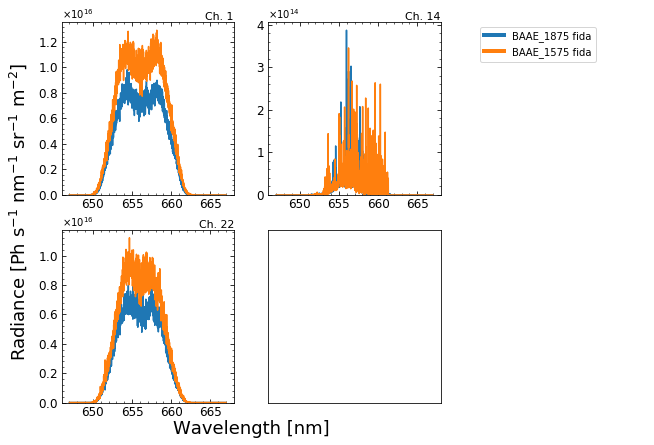
{: style="text-align: center"}
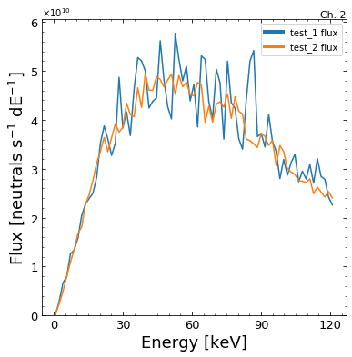
-r BAAE_1875 -fi -ls 12 14 22 -os
Plots run ID BAAE_1875, active FIDA data, list of spectral channels (12, 14 & 22), and ignores NPA files.
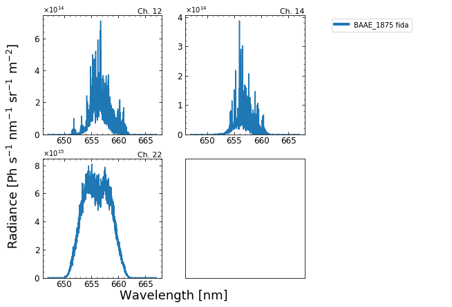
Alternatively, the code accepts specific file paths from the -p argument.
Similar to Case 1, specifying emission type and flux type is required when plotting data from *_spectra.h5 and *_npa.h5 files, respectively.
Of course, channel information is also a requirement.
plot_outputs -p /u/garciaav/different/diff_1575_spectra.h5
-s -rs 10 18 -n -rn 2 3
Plots all spectral data, range of spectral channels (10-18), all NPA data and range of NPA channels (2-3).
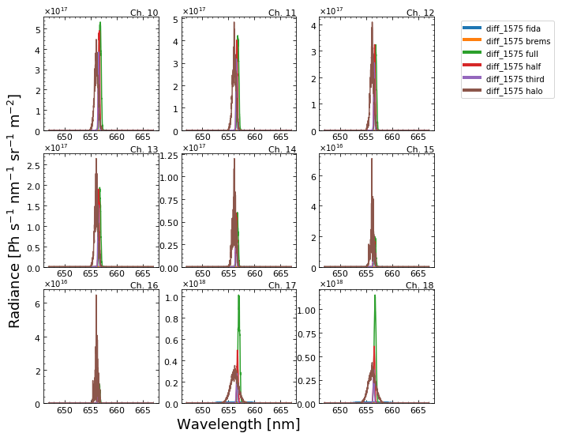
{: style="text-align: center"}
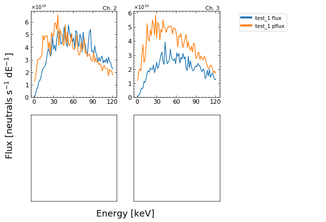
-fi -ls 1
Plots active FIDA data and list of spectral channels (1).
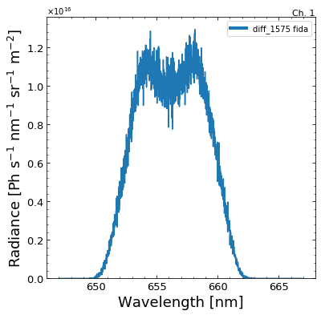
You can change the x and y limits of the spectral plot with -sx and -sy arguments.
Also, you can use -sl to plot the y axis on a log-scale.
Similarly, change the NPA plots with the -nx, -ny and -nl arguments.
plot_outputs -p /u/garciaav/different/diff_1575_spectra.h5
-fi -ls 1 -sx 649 663
Plots active FIDA data, list of spectral channels (1) and sets wavelength limits (649-663).
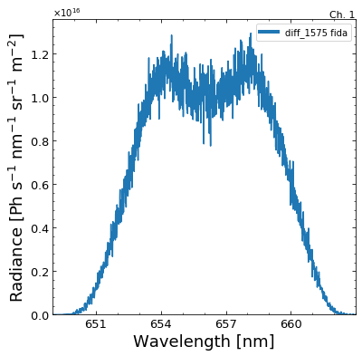
-fi -ls 1 -sx 649 663 -sy 3e11 3e16 -sl
Plots active FIDA data, list of spectral channels (1), sets wavelength limits (649-663), sets radiance limits (3$\times$10$^11$-3$\times$10$^16$) and turns on the log scale.
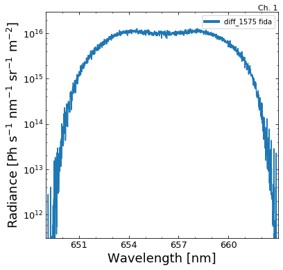
plot_outputs -p /u/garciaav/test/test_1_npa.h5
-n -ln 1 -ny 4e8 2e11 -nl
Plots NPA data, list of NPA channels (1), sets flux limits (4$\times$10$^8$-2$\times$10$^11$) and turns on the log scale.
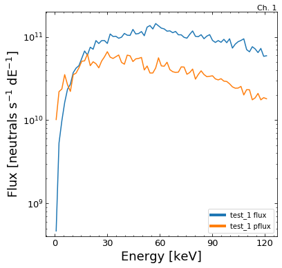
You can save spectral and NPA plots as png files in a specified folder
-ss -sn /u/garciaav/test/figs/
Lastly, execute plot_outputs -h to display the help message.
Congrats, you made it to the end of the tutorial!
If you have any questions or find a bug, please let us know on GitHub